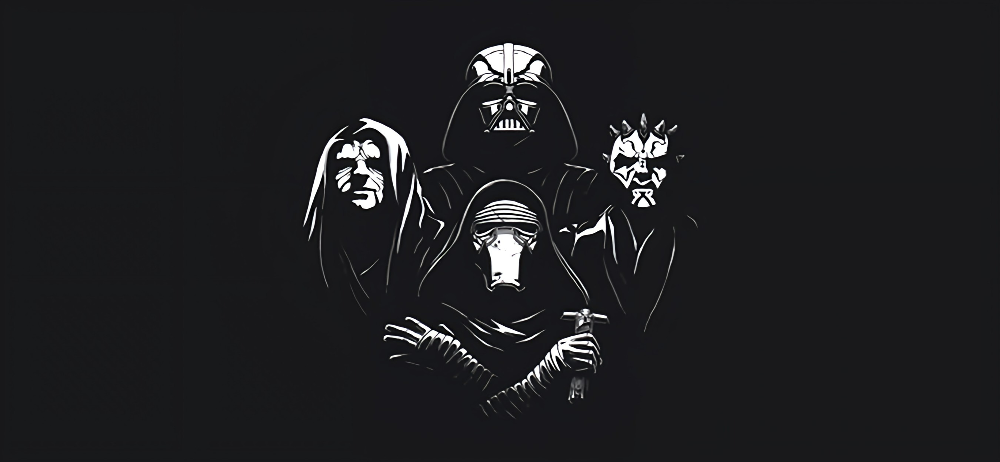

- 

ps mis pasatiempos son esas cosas como comer papa xdxd.
Siempre me la he pasado con mis audifonos, es una de mis grandes aficiones siempre que puedo hao las cosas con musica es lago que me relaja aunque no escucho la tipica el genero mas actual que he escuchado es el lo-fi hip-hop.
Otra de mis actividades favoritas los videojuegos todo empezo con una computadora y esos Lectores de DVD en los culaes podias jugar unos videojuegos, mi primera consola real fue un Nintendo Gamecube con la cual la pase bien de niño.
El ciclismo es un deporte que lo practicaria todo el dia si pudiera desde que consegui mi primera bicicleta recori varios kilometros y aprendi un poco de su mecanica, claro esta que tuve unas cuantas caidas y termine aruinando una que otra bicicleta pero siempre sigo practicandolo cuando puedo.
Soy un man de 16 años de edad xdxd, pero anteriormente estaba estudiando en la casa de guillermo jugando play xdxd.
Me gustaría tener la habilidad de poder hacer dibujos digitales, no importando el programa que tenga que utilizar.
La habilidad que también desearía tener es la de poder diseñar videojuegos con tematica de 8-bits.
Tener nuevos conceptos y prespectivas distintas pero conservando lo necesario y lo que no necesita cambios.